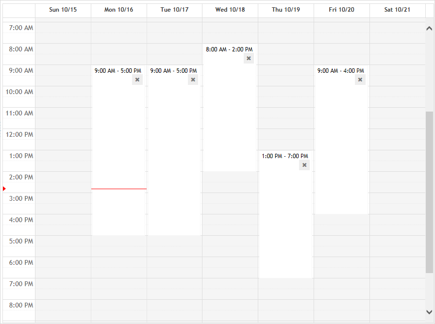

You can configure availability for only one user at a time; if you have appropriate permission you can configure the availability of users other than yourself.
In the sidebar on the Filters tab, select the user that you want to define availability for. If the user is linked to more than one health center, select the health center that you are defining availability for.
In the drop-down menu on the main Appointments form, choose Availability.
The calendar displays in Week view. All times are initially displayed as available if specific availability has not been defined for the selected user. Once you start defining available times, the unselected areas turn grey to indicate unavailable.
Click and drag to specify the days and times you are available.

For each timeslot you create you are asked if you want to assign it to a specific activity. If you click Yes, define the recurrence and select one or more activities from the ScheduleActivity look-up table. To save the assignment, click Update.
In the Availability view you can hover over a timeslot to see a tooltip identifying the assigned activities.
If a user attempts to schedule a different activity for the timeslot, they are prompted to confirm.
When you configure availability for a particular day of the week (e.g. Monday), that will apply to the same day in all future weeks. If you want to adjust the availability for one of those days in a future week, simply navigate to that day using the Arrow icons at the top right, and then click and drag to change your availability. You will be asked if you want to change your availability for just that day or for more than one of those days (several Mondays, for example). If you opt to change it for more than one of those days, you will be provided with custom recurrence options to do so.
If you need to change existing availability for an indefinite period of time, delete the current series and restart a new one.